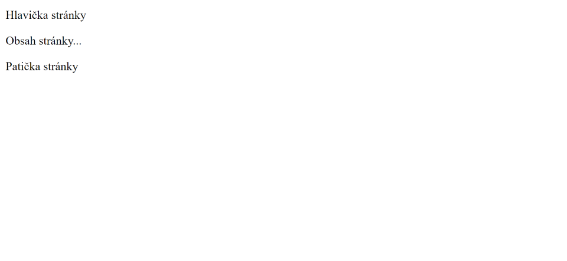

JSP direktivy
V této části se podíváme na direktivy. Jedná se o elementy, které web containeru (Tomcatu) říkají, jak má JSP stránku převést na servlet. Syntaxe pro direktivu je následující (pokud máme více atributů, tak je můžeme oddělit mezerou):
<%@ direktiva atribut="hodnota" %>Typy direktiv
Existují tři typy direktiv poskytující různé atributy, které můžeme použít. Následující seznam je popisuje:
- page - definuje atributy k obecnému nastavení JSP stránky
- include - používá se k vložení obsahu z jiného souboru do JSP stránky
- taglib - používá se k nadefinování knihovny tagů, abychom ji mohli použít
Page direktiva
Page direktiva definuje atributy, které popisuje následující tabulka. Jedná se o atributy, které slouží k obecnému nastavení JSP stránky.
| Atribut | Hodnota | Popis |
|---|---|---|
| import | třída | rozhraní | balíček | Importuje třídu, rozhraní, nebo celý balíček (podobné jako klíčové slovo import v Javě). |
| contentType | MIME type | Definuje jaký obsah se vrací v HTTP response (defaultně je to HTML stránka - text/html) |
| extends | třída | Definuje nadtřídu vygenerovaného servletu (používá se velmi zřídka). |
| info | text | Nastavuje informace o JSP stránce. Tyto informace mohou být v servletu získány pomocí getServletInfo metody. |
| buffer | velikost (např. "16kb") | Nastavuje velikost vyrovnávací paměti pro zpracování výstupu vygenerovaného JSP stránkou (defaultní je 8kb). Popravdě úplně nevím k čemu to slouží. |
| language | skriptovací jazyk | Definuje skriptovací jazyk použitý v JSP stránce (defaultní je "java"). |
| isELIgnored | true | false | Nastavuje, zda se má ignorovat expression language (defaultní je "false"). |
| isThreadSafe | true | false | Definuje, zda je bezpečné, aby JSP stránka běžela pro více requestů zároveň (mohlo se používat více vláken). Defaultní hodnota je "true". Pokud ji změníme na "false", tak web container vždy počká, než JSP stránka zpracuje request aby jí mohl předat pro zpracování další (Vygeneruje pro ni servlet, který bude implementovat rozhraní SingleThreadModel). |
| autoFlush | true | false | Nastavuje, zda se má vyrovnávací paměť automaticky vyprázdnit, když je plná, nebo se má vyhodit chyba. Nevím k čemu to slouží ale asi to má nějakou spojitost s atributem buffer. |
| session | true | false | Nastavuje, zda JSP stránka používá sessions. Defaultní hodnota je "true". Pokud ji nastavíme na "false", tak v JSP stránce nebude k dispozici implicitní objekt session. |
| pageEncoding | kódování | Nastavuje kódování stránky. Defaultní je "ISO-8859-1". Je vždy potřeba změnit na "UTF-8", aby se nám dobře zobrazoval český text. |
| errorPage | stránka | Nastavuje stránku, která se má zobrazit, když v JSP souboru dojde k chybě. |
| isErrorPage | true | false | Nastavuje, že se jedná o chybovou stránku. Implicitní objekt exception se dá použít jen na chybových stránkách. |
Jak jste si mohli v předchozí tabulce všimnout, tak atribut isELIgnored slouží k ignorování expression language. Co je expression language asi ještě nevíte, jelikož jsme se tím v tutoriálu zatím nezabývali. Je na to vyhrazená samostatná část.
Následující ukázka ukazuje příklad použití page direktivy. První řádek je potřeba dávat do každého JSP souboru pro správné zobrazení českého textu.
<!-- tento řádek je potřeba vkládat do každé JSP stránky
pro správné zobrazení českého textu -->
<%@ page contentType="text/html" pageEncoding="UTF-8"%>
<!-- naimportování třídy Date z balíčku java.util -->
<%@ page import="java.util.Date" %>
<!DOCTYPE html>
<html>
<head>
<meta charset="UTF-8">
<title>Page direktiva</title>
</head>
<body>
<!-- Jelikož máme třídu Date naimportovanou, tak ji
můžeme použít bez specifikování balíčku. -->
<p>Čas na serveru: <%= new Date() %></p>
</body>
</html>Include direktiva
Pomocí direktivy include můžeme web containeru (Tomcatu) říct, aby při generování servletu přidal kód z jiných souborů. Díky tomu jsme například schopni oddělit části kódu, které by měli být společné pro všechny stránky.
Pro ukázku si založíme nový Maven projekt a vytvoříme si soubor header.jsp a footer.jsp. V souboru header.jsp vytvoříme kód pro hlavičku stránky a v souboru footer.jsp kód pro patičku stránky. Následující ukázky obsah pro tyto soubory ukazují. Tady v ukázce představují jen jeden řádek kódu, ale v praxi byste měli hlavičku a patičku stránky samozřejmě komplexnější.
- src
- main
- java
- resources
- webapp
- test
- java
- resources
- main
- target
<project xmlns="http://maven.apache.org/POM/4.0.0" xmlns:xsi="http://www.w3.org/2001/XMLSchema-instance" xsi:schemaLocation="http://maven.apache.org/POM/4.0.0 https://maven.apache.org/xsd/maven-4.0.0.xsd">
<modelVersion>4.0.0</modelVersion>
<groupId>io.github.jirkasa</groupId>
<artifactId>include-direktiva</artifactId>
<version>0.0.1-SNAPSHOT</version>
<packaging>war</packaging>
<name>include-direktiva</name>
<properties>
<project.build.sourceEncoding>UTF-8</project.build.sourceEncoding>
<project.reporting.outputEncoding>UTF-8</project.reporting.outputEncoding>
<java.version>17</java.version>
<maven.compiler.source>${java.version}</maven.compiler.source>
<maven.compiler.target>${java.version}</maven.compiler.target>
</properties>
<dependencies>
<dependency>
<groupId>javax.servlet</groupId>
<artifactId>javax.servlet-api</artifactId>
<version>4.0.1</version>
<scope>provided</scope>
</dependency>
</dependencies>
</project><%@ page contentType="text/html" pageEncoding="UTF-8"%>
<header>Hlavička stránky</header>- src/main/webapp
<%@ page contentType="text/html" pageEncoding="UTF-8"%>
<footer>Patička stránky</footer>Teď si vytvoříme JSP stránku, na které kód z vytvořených souborů pomocí direktivy include použijeme. Můžeme ji pojmenovat třeba jako stranka.jsp. Direktiva include má atribut file, kde se předává cesta k souboru, jehož obsah se má vložit. Následující ukázka ukazuje kód pro naši stránku.
- src/main/webapp
<%@ page contentType="text/html" pageEncoding="UTF-8"%>
<!DOCTYPE html>
<html>
<head>
<meta charset="UTF-8">
<title>Include direktiva</title>
</head>
<body>
<%@ include file="./header.jsp" %>
<p>Obsah stránky...</p>
<%@ include file="./footer.jsp" %>
</body>
</html>Pokud si aplikaci spustíte a stránku si otevřete (http://localhost:8080/include-direktiva/stranka.jsp), uvidíte stránku, kterou ukazuje následující obrázek. Kód ze souborů header.jsp a footer.jsp se tedy na stránce použil.
Taglib direktiva
Taglib direktiva slouží k nadefinování knihovny tagů. Díky tomu potom můžeme tagy z knihovny na stránce použít. V části "JSP Custom tagy" se naučíme vytvářet vlastní knihovny tagů, takže tuto direktivu potom použijeme pro použití tagů z knihovny na stránce.
Taglib direktiva má atribut uri, kde předáváme jakou knihovnu chceme použít, a atribut prefix, který značí pod jakým názvem ji chceme na stránce používat. Následující ukázka ukazuje příklad použití taglib direktivy.
<%@ page contentType="text/html" pageEncoding="UTF-8"%>
<!-- Nadefinování knihovny tagů, kterou chceme používat. -->
<%@ taglib uri="http://java.sun.com/jsp/jstl/core" prefix="c"%>
<!DOCTYPE html>
<html>
<head>
<meta charset="UTF-8">
<title>Taglib direktiva</title>
</head>
<body>
<!-- Tagy z knihovny můžeme používat pod prefixem, který jsme si definovali. -->
<c:forEach var="i" begin="1" end="5">
Řádek ${i}
</c:forEach>
</body>
</html>Pro tuto část je to vše. Prošli jsme si všechny direktivy, které nám JSP nabízí. V příští části se podíváme na action tagy.